Problem 5.1, computation of approximate polynomial greatest common divisors (gcds). Given two polynomials,
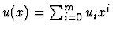
and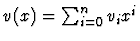
, a fixed polynomial norm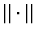
, and a positive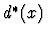
of the maximum degree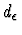
that divides two polynomials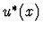
and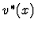
satisfying
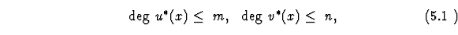
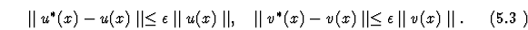
The study of this problem is motivated by its applications to control linear systems, network theory and computer aided design (see some bibliography in [CGTW95], [EGL96], [CCC98], [P98], [P,a]).
Effective algorithms are known that estimate the weighted least-squares distances
from u(x) and v(x) to two polynomials
and
satisfying
(5.1) and divisible by a given polynomial
[CGTW95],
[P,a]. The computation of such a candidate polynomial
is a harder
problem, however. Only exponential time algorithms are known for its solution
[Hou77],
[KL96], [CCC98]; they are based on using the (weighted) least-squares norm and
quadratic programming approach. There are several
alternative techniques, which define the polynomial neighborhoods (5.2)
based on the coefficient vector norms.
These techniques
give us heuristic solutions of
Problem 5.1, that is, produce a
common
 -divisor
-divisor
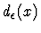
of u(x) and v(x) and, furthermore, for some input pairs u(x) and v(x) verify that the degree of such a divisor is maximum but for other input pairs leave the latter question open. These techniques include Euclidean algorithm [Sc85], [NS91], [HS96], [EGL96], [EGL97], [SaSa97], computations with subresultant matrices [CGTW95], [EGL96], [EGL97] and Lazard's algorithm [L81], having an equivalent matrix pencil version [KM94].
We propose two alternative approaches, based on Padé
approximation and polynomial rootfinding
(cf. [P98], [P,a]).
The former one is similar to the
subresultant approach. It leads to a little simpler computations (involving
symmetric Hankel or Bezout matrices of smaller sizes, versus unsymmetric
subresultant matrices) but to a little less efficient techniques for the insurance
of the  -divisiblity. This approach relies on the observation that
the polynomial
-divisiblity. This approach relies on the observation that
the polynomial
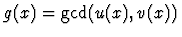
satisfies the equationswhere
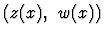
is the (m,n) Padé approximation of the power series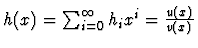
. Here, with no loss of generality, we assume that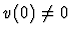
.The computation of the gcd by this approach consists of the three successive stages of the computation of the following polynomials:
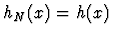
mod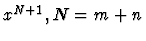
,
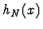
,
For the computation of an  -gcd, stages 2 and 3 are modified as
follows [P98], [P,a].
At first, the pairs
-gcd, stages 2 and 3 are modified as
follows [P98], [P,a].
At first, the pairs
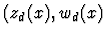
) of polynomials being the (m-d, n-d) Padé approximations of are computed for d recursively decreasing from a given upper bound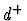
on the degree of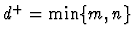
) down to an unknown nonnegative integer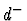
; each computed polynomial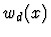
is tested for being an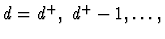
until we either arrive at d=0 (in which case the value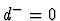
and the constant polynomial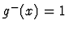
are output) or satisfy the inequalities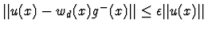
,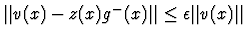
for some polynomials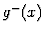
of degree at most d and z(x) of degree at most n-d (in which case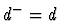
and are output).
Such an algorithm outputs a common  -divisor of u(x) , v(x) having
degree .
If other methods show that
is
actually
an upper
(and consequently the tight)
bound on the degree
of
-divisor of u(x) , v(x) having
degree .
If other methods show that
is
actually
an upper
(and consequently the tight)
bound on the degree
of  -gcd, then the computed
-gcd, then the computed  -divisor
-divisor
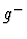
is a certifiedThe arithmetic cost of performing the above computations is bounded by
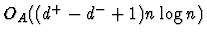
, for a generic input pair (u(x) , v(x)), and by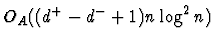
, for any pair (u(x) , v(x)) , provided that the Padé approximations are computed by means of the extended Euclidean algorithm [BGY80], [BP94]. An alternative way is to obtain them via the computations with the associated structured (Hankel or Bezout) matrices, that is, via the computation of the rank r of such an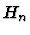
or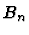
followed by solving a nonsingular linear system of r equations with a structured coefficient matrix [BGY80], [BP94]. In the context of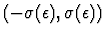
for a positive function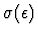
. This way of computation is slower but allows numerical stabilization and defines an upper bound on the degree of anIn our second approach, we rely on the observation that the behavior of the gcd of the perturbed pairs of polynomials is directly governed by the perturbation of their zeros and only indirectly by the perturbation of their coefficients. Thus, in this approach, we first recall Theorem 3.1 to compute some higher precision approximations,
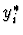
and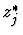
, to all the zeros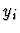
of u(x) and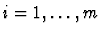
;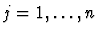
. Then we define a bipartite graph with the two sets of vertices,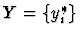
and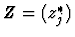
, and with the edges connecting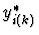
and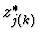
if and only if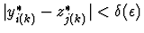
for a specified positive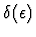
. We compute the maximum cardinality matching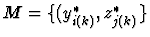
in the graph and the candidate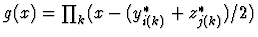
, where the product is over all k such that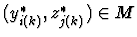
. Finally, we test g(x) for being a common
The computational cost of our
second approach is quite low; it is defined by Theorem 3.1 and by the well
known bound of comparisons, N=m+n , on the cost of the
matching computation. We also show that the latter bound can be decreased to O(mn) comparisons (by replacing the matching stage by the computation of
the connected components in a bipartite graph) if elastic choice of  is allowed (cf. [P98], [P,a]).
is allowed (cf. [P98], [P,a]).
This approach leads to a natural extension of the definition of
 -gcd where the norm (of the perturbation) of a polynomial is defined in terms
of the absolutely maximum (perturbation of)
its zeros rather than its coefficients.
In this case our approach always outputs correctly
an
-gcd where the norm (of the perturbation) of a polynomial is defined in terms
of the absolutely maximum (perturbation of)
its zeros rather than its coefficients.
In this case our approach always outputs correctly
an  -gcd. Furthermore, the resulting solution of such an
-gcd. Furthermore, the resulting solution of such an
 -gcd
problem can be extended to a heuristic algorithm for
the problem of computing a Hankel matrix of a lower rank approximating a given Hankel matrix of
rank r , with ,
this problem has important applications to signal and image
processing
[Cad88], [CaW90], [DeM94], [vdV96].
-gcd
problem can be extended to a heuristic algorithm for
the problem of computing a Hankel matrix of a lower rank approximating a given Hankel matrix of
rank r , with ,
this problem has important applications to signal and image
processing
[Cad88], [CaW90], [DeM94], [vdV96].